Project 3: Form and Fit for Electronics 10/15
Part 2.1: Creating the alarm clock 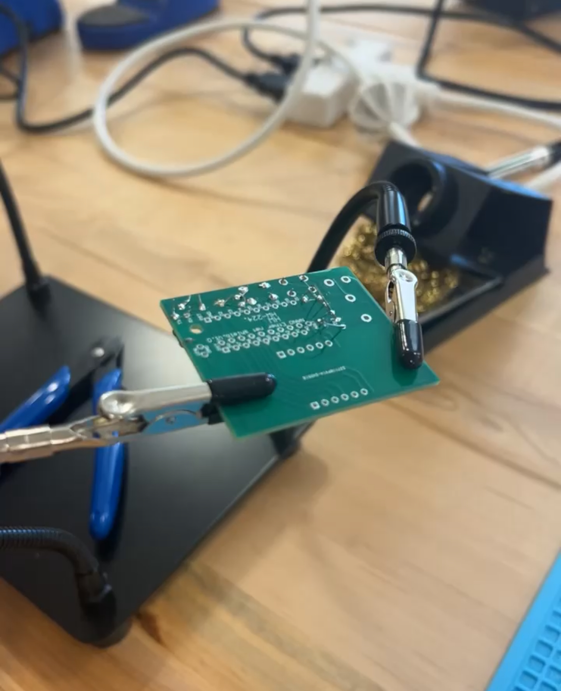
Soldering in the process
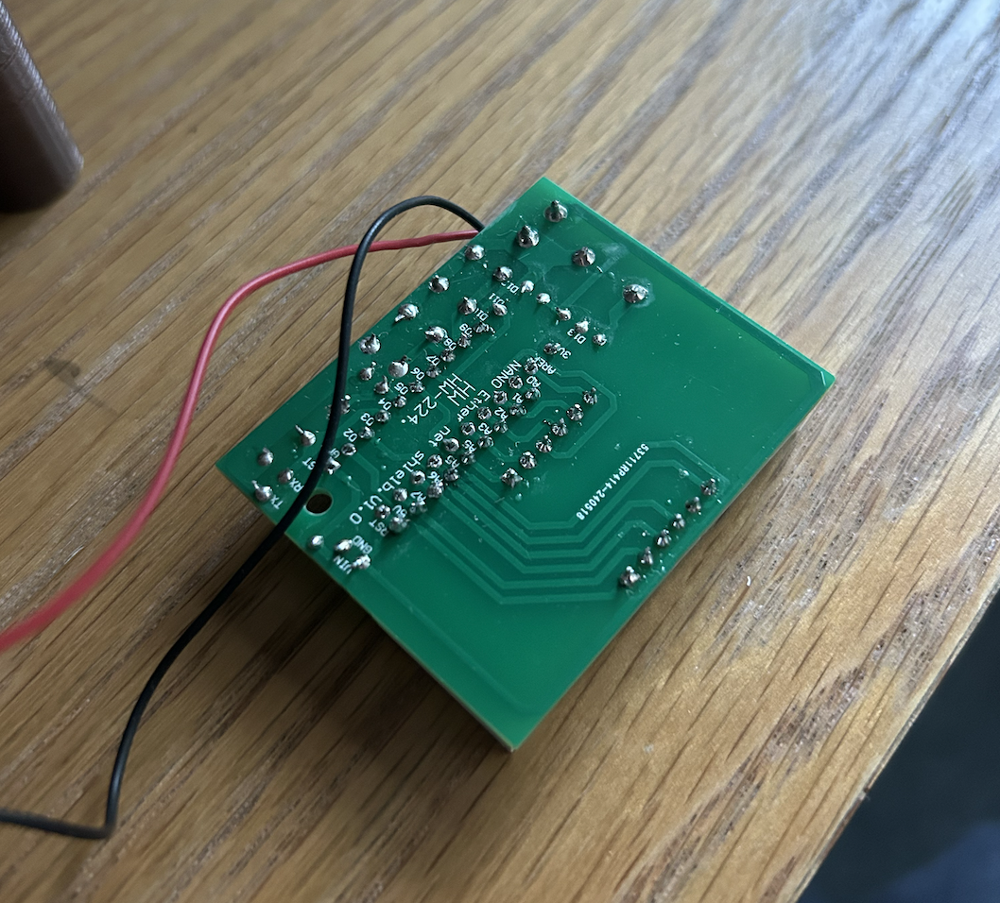Finished soldering
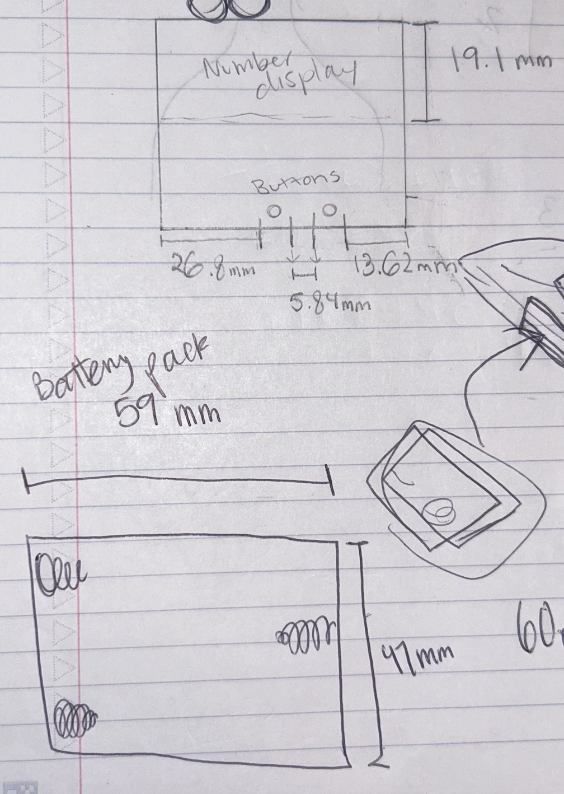Lab notes
I was able to build a successful alarm clock after taking my time soldering. I had to use the solder sucker once because I bridged two pads together accidentally. I adjusted the amount of solder I was applying accordingly. It takes precision and a steady hand. I measured the clock and its battery pack with digital calipers.
Part 2.2: 3D Printed Enclosure 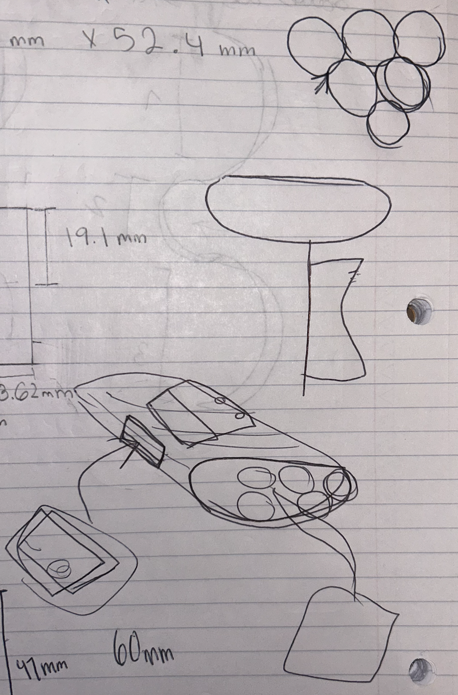
Lab Notes
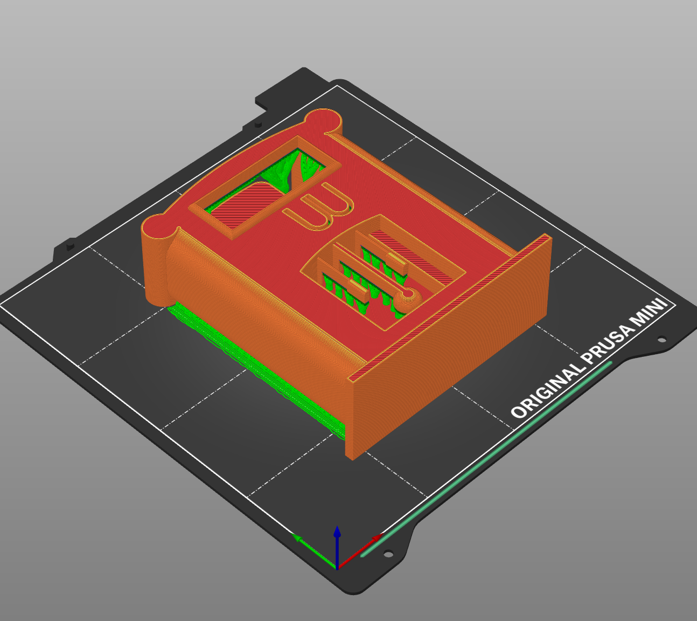PrusaSlicer
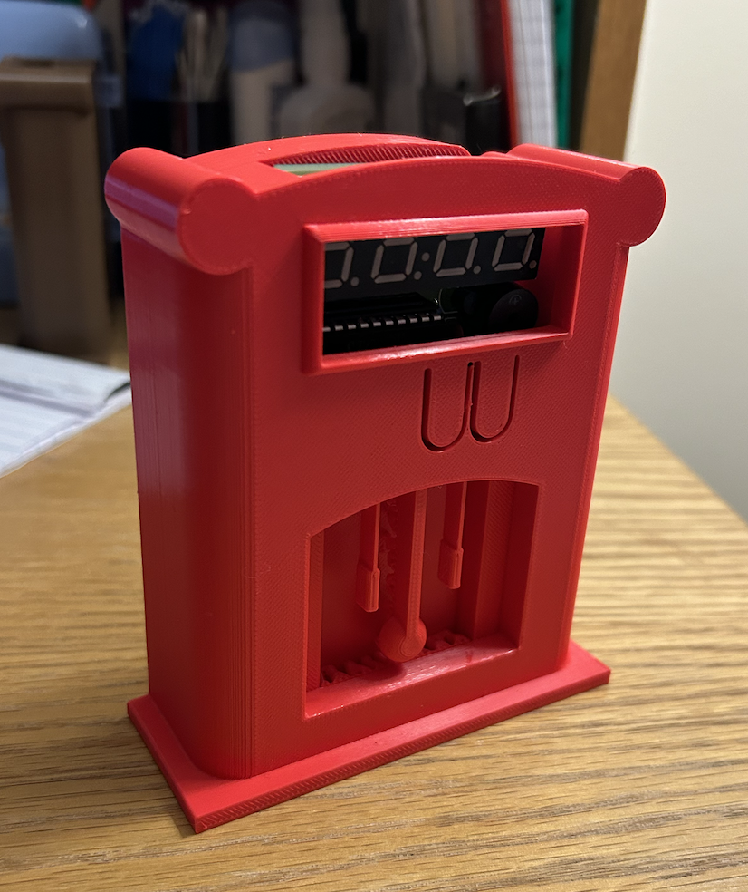Print 1
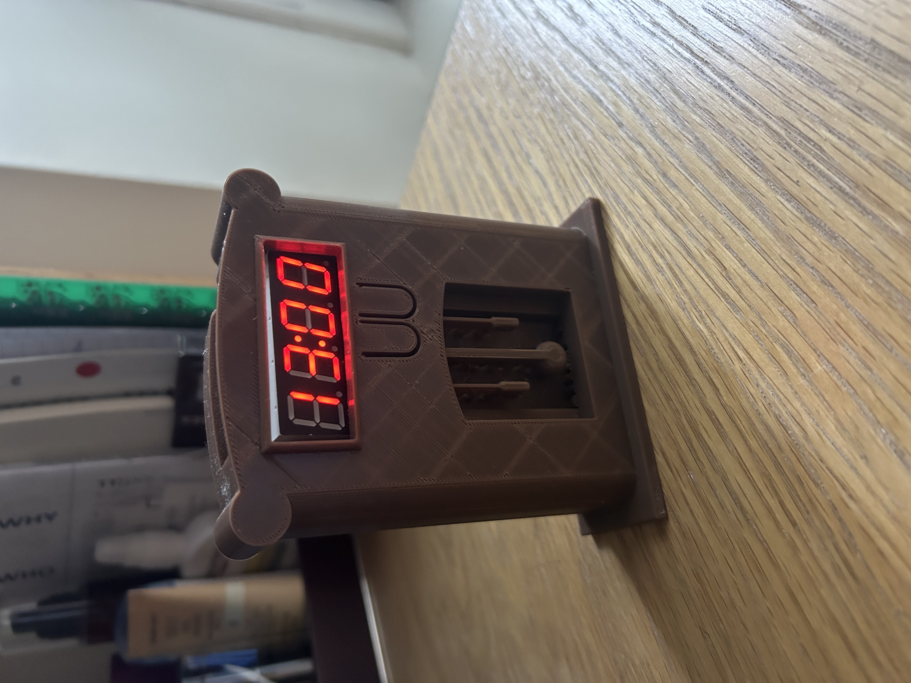Print 2
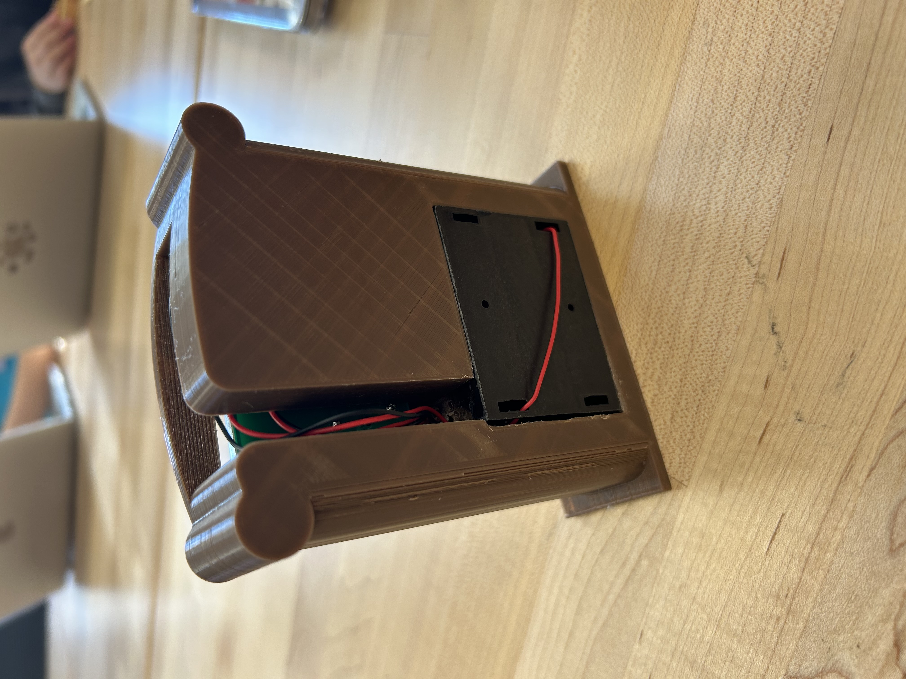Wire management
I went through a few different ideas before settling on my grandfather clock design. First, I wanted to make the enclosure shaped like dynamite, as shown in the sketches. I thought the digital number display looked like it belonged on a cartoon version of dynamite, complete with the wires left sticking out. This was not easy to design in CAD nor a practical design in general. I switched to a mini grandfather alarm clock, which was easy to visualize in Fusion. The first print was not functional. I added small supports inside the clock to keep it level with the buttons I put on the front, but overdid it completely. On the second print, I lowered them to around 2mm instead and the clock was able to sit perfectly in the enclosure. I also slimmed down the clock visually by bringing the center design below the display inward. In PrusaSlicer I added organic supports but the hanging part of the clock is very fragile so I’ve left some of the supports on. The wires fit well in the back of the clock, and the battery pack and batteries fit well without falling out. The buttons press, but I need to make their backside longer or bring the clock itself forward in order for them to make contact with the actual clock buttons. I did the final print in brown to mimic wood and I’m satisfied with the look of the final result.
Part 2.3: Laser Cut Enclosure

Lab Notes
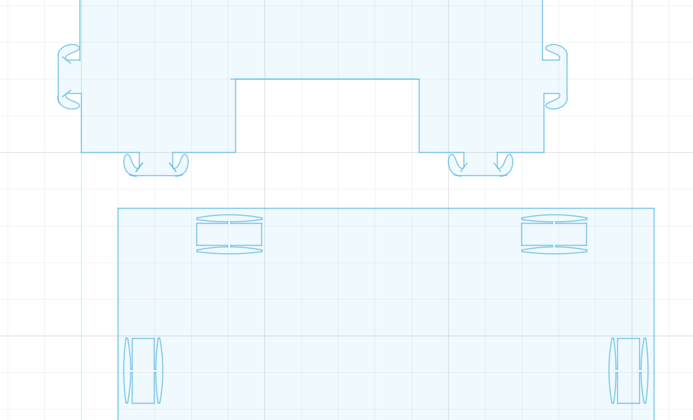Fusion
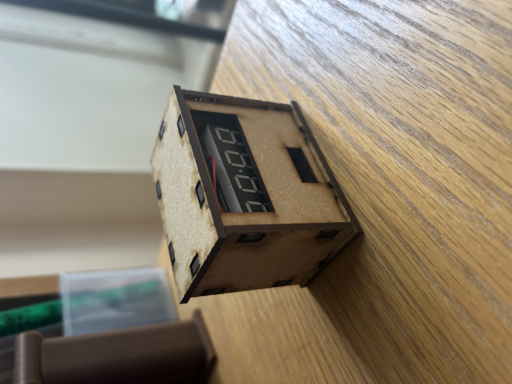Cut 1
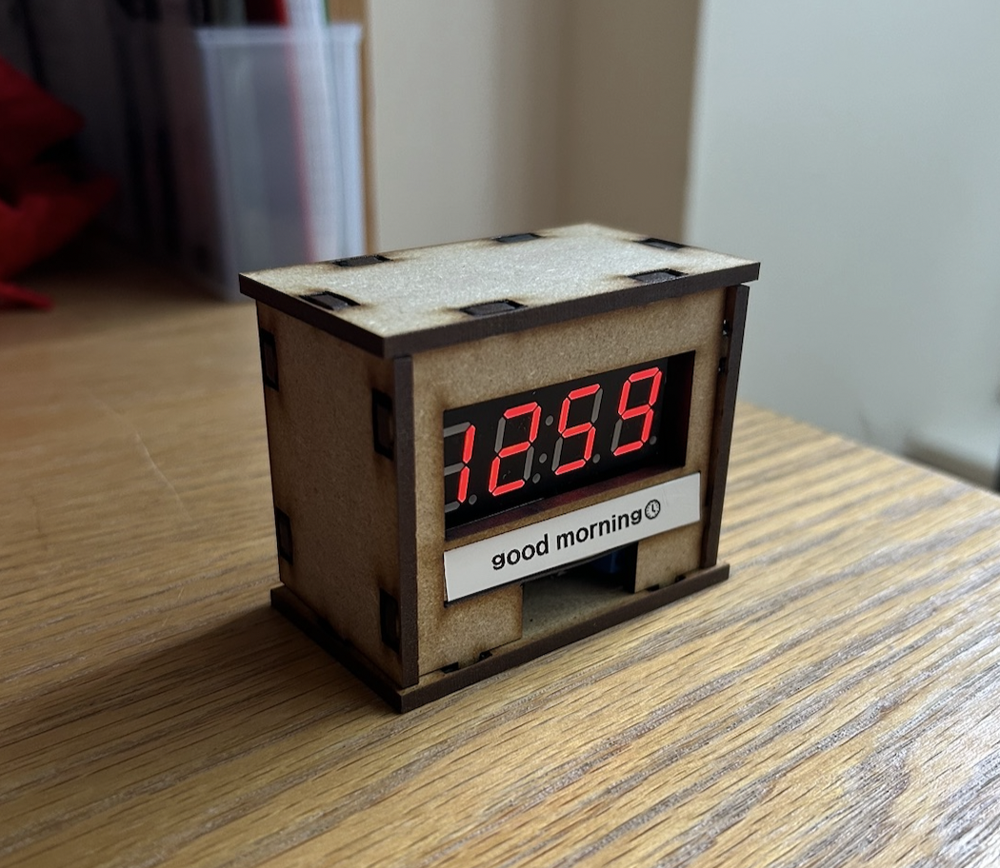Cut 2
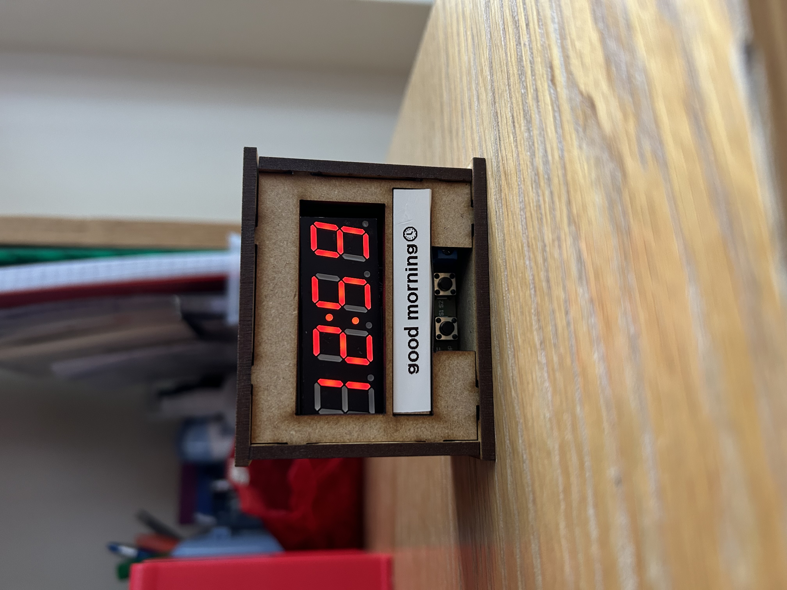Buttons
I originally wanted to design my laser cut enclosure to look like a miniature package, complete with an engraved shipping label. Instead, I chose to focus on the spring joints, which took a long time on Fusion. In the end, they are functional in holding the box together, but they are too small for the laser to cut. If I enlarged and them and then flattened them they would work. They are just extremely fragile on the cuts I have now. My first cut held together and fit together, just had too much room on the inside. The holes also didn’t line up properly with the number display. On the second cut, I adjusted the holes and slimmed the entire box down. Now, the clock sits upright with the numbers in full view. I added a room for a label that fits the size my label maker prints. I printed “good morning” to decorate the clock. In the future, I’d like to try engraving.